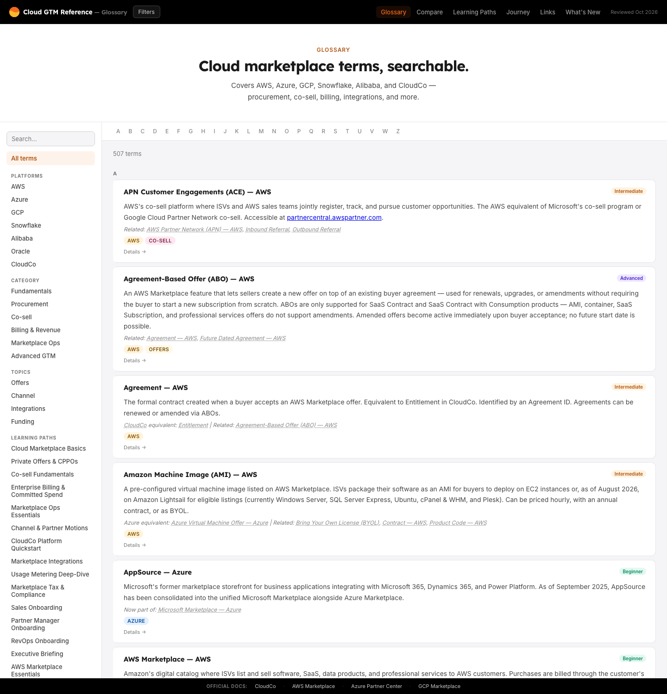
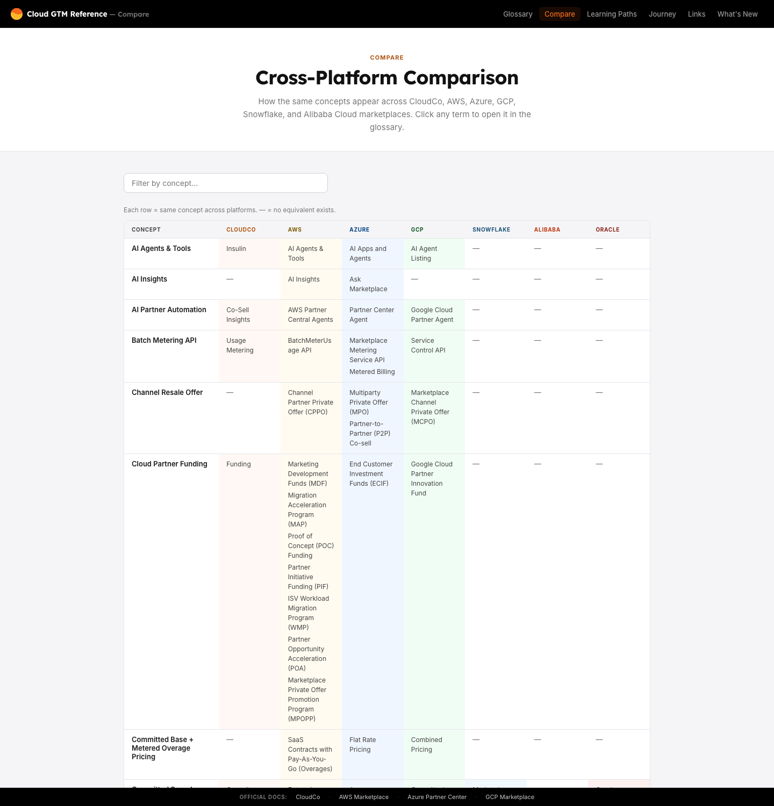
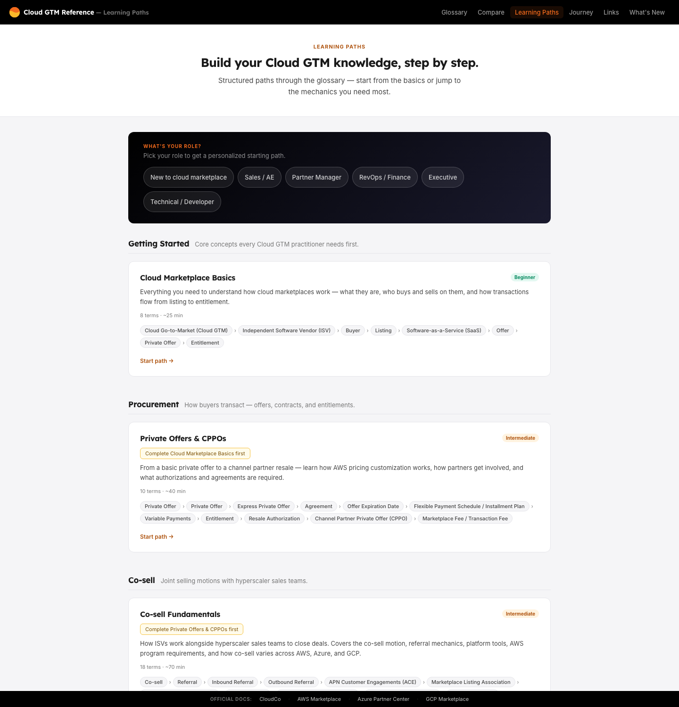
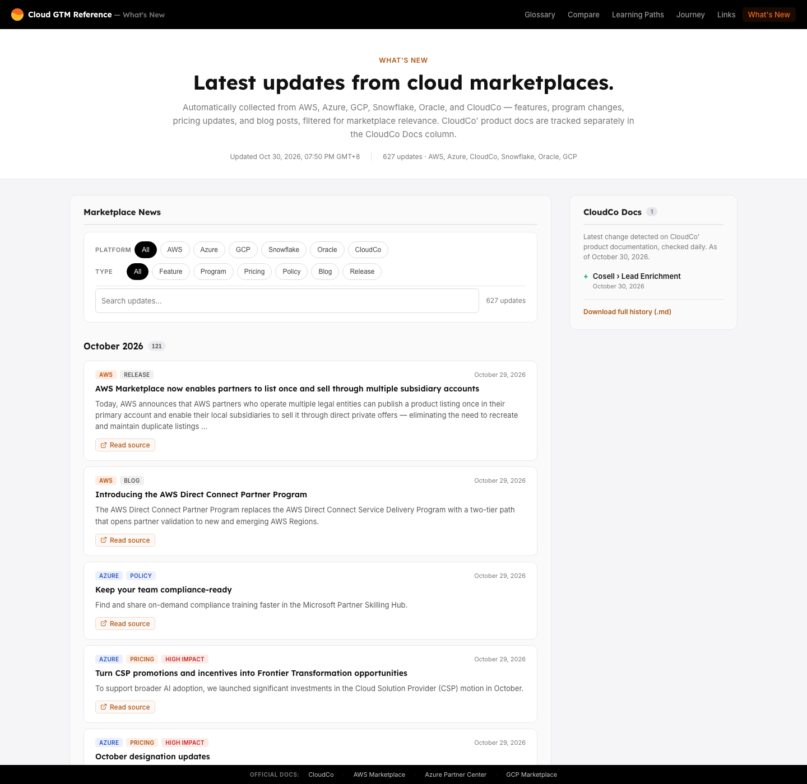
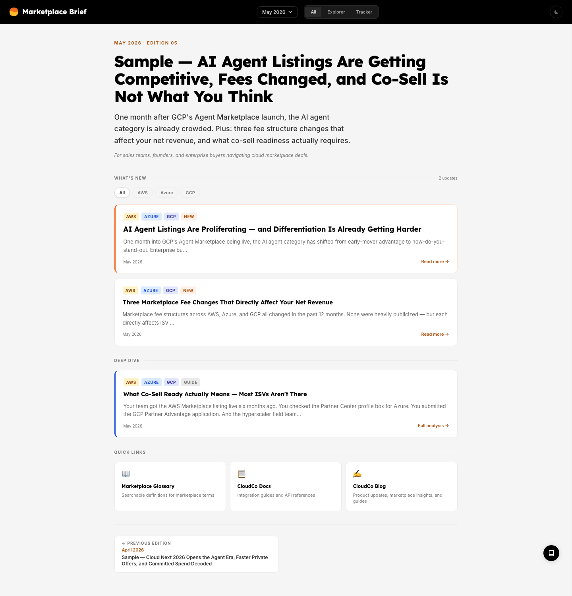
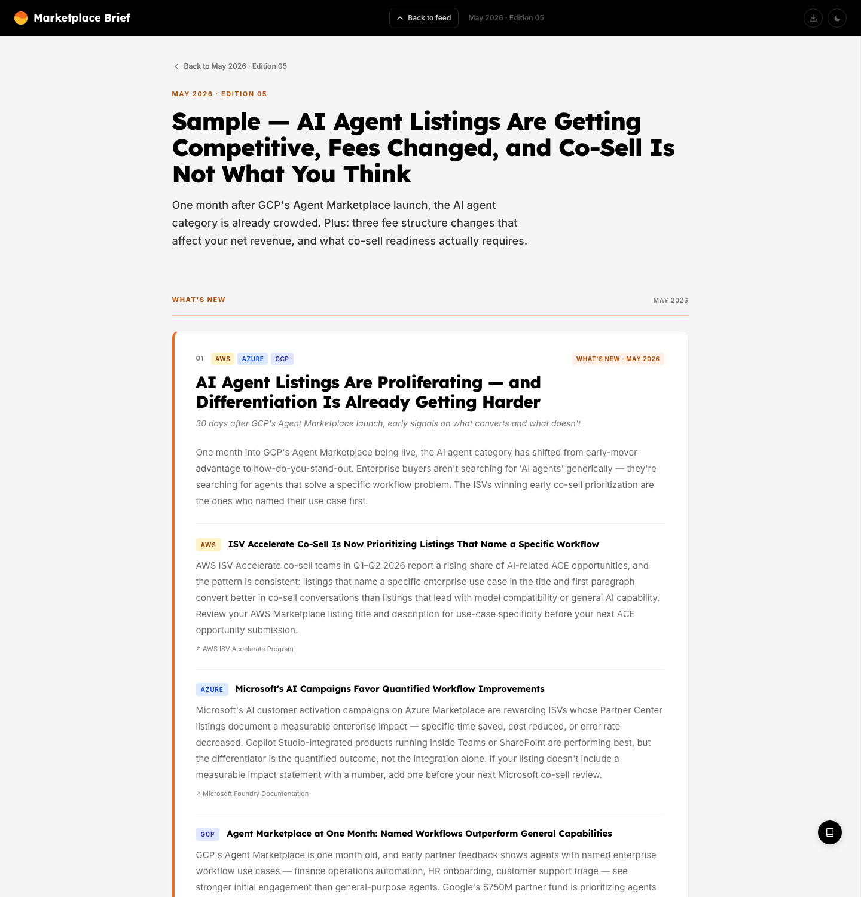

Gelo Baring · Selected workKnowledge systems · Enablement · Frontend
I make complex products legible — and teachable.
For eight months I was the knowledge and enablement function at
a B2B SaaS company selling into cloud marketplaces. I built a
searchable reference for a domain where the same concept has
five different names, a monthly briefing, a seven-week
onboarding curriculum, and the AI-assisted process that kept
them current. Before that, I built help centers, client
websites, and an internal invoicing system.
Knowledge systems · help centers · front-end2015 – 2026HTML/CSS · JavaScript · PHP/Laravel
A domain where every answer has five names and a
six-week shelf life.
Cloud marketplaces are where software companies
list, price, and sell through AWS, Microsoft,
Google, Snowflake, and Oracle. The mechanics are
contractual, regional, and different on every
platform.
A sales team supporting that motion has to answer
questions like
“can this customer pay from their
committed cloud spend?”
and
“who authorises a channel resale in
EMEA?”
The answer is usually spread across six
documentation sites, three internal docs, and one
person who happens to know. The same concept is
called a CPPO on AWS, an
MPO on Azure, and an
MCPO on Google. Search any of those
acronyms and you get marketing pages, not
definitions.
One concept, five vocabularies — a sample from
the comparison layer
Concept
AWS
Microsoft
Google Cloud
Channel resale offer
Channel Partner Private Offer (CPPO)
Multiparty Private Offer (MPO)
Marketplace Channel Private Offer (MCPO)
Contract of record
Agreement
Entitlement
Subscription
Committed spend
Enterprise Discount Program (EDP)
MACC
Committed Use Discount
The enablement gap was not a lack of documentation. It
was a lack of
one place where the vocabulary, the mechanics,
and the “what do I do on Monday” answer
lived together — and stayed true.
02
Approach
Three layers, one pipeline.
Rather than write a one-off handbook, I built a
loop: capture what changed, decide what matters,
publish it, and fold the durable parts back into a
permanent reference.
Capture
13 ingestion sources across five platforms
feed the reference and the What’s New
archive. Separately, a 16-source monitoring
set drives three domain agents weekly, plus
an event-triggered pass within 48 hours of a
major announcement.
Diff & score
Content hashes compared against stored
snapshots. Each candidate is scored 1–5 and
routed to briefing, reference update, or
discard.
Human gate
The reasoning is reviewed before the draft
is opened. A rejected topic costs one read,
not a rewrite. Nothing publishes itself.
Publish
Approved items become a briefing edition or
a stamped reference section, with source
links and a last-verified date.
The pipeline documents are shared work: I owned
discovery and orchestration, and integrated the UX
outline and writing guide produced by a designer and
a content lead on the team. The implementation —
reference site, publishing site, and ingestion — was
mine.
Five editions. Topic-first,
hyperscaler-as-lens, each closing with a
practical implication rather than a summary.
Layer 3 · Process
Operations
Seven agent specs, three skill documents,
explicit review gates and failure modes — a
model for keeping the other layers current.
The curriculum sits beside this loop rather than
inside it: it sequences the reference into a
seven-week path and pairs every module with a quiz.
How I work
Frame the decision. Write
down what the reader needs to do differently
before choosing a format or a tool.
Ship a reviewable slice.
Deliver in phases a collaborator can inspect,
not one large reveal at the end.
Log the trade-off. Every
meaningful choice gets its rationale and the
alternative that was rejected.
Verify against source. If a
claim cannot be traced, it does not ship —
it gets flagged and checked.
03
The work
Four systems, built to feed each other.
Each project solved a different problem for a different
reader. Together they cover the full path from
“what does this word mean” to “what
changed this month, what should I do about it, and how do
I teach it to a new hire.”
One definition per term507 terms resolve to a canonical definition,
an alias set, and a source URL — not six
documentation sites and a person who happens to
know.
A seven-week path where none existed13 modules and 146 quiz questions sequence the
domain from concepts to co-sell judgment.
Four errors caught before publicationThe verification pass stopped a bad CAGR
figure, a misattributed release, and two wrong
product versions.
1,607 records protectedA zero-parse guard now aborts the ingestion job
instead of overwriting the archive.
Case A · Reference platform
A 507-term reference that behaves like a
product, not a wiki.
A searchable glossary plus learning paths,
guided walkthroughs, and a cross-platform
comparison map — all generated from one data
layer, with no framework and no build step.
Vanilla JSStatic siteAccessibilityContent ops

Glossary. 507 terms, faceted filtering,
fuzzy search with a subsequence fallback, and a
detail panel. Difficulty is assigned per term
against a rubric, then surfaced as a filter.
Problem
New hires, sales engineers, and partner
managers were losing hours to the same
twenty questions. Existing docs
described features; nobody had described
the mechanics — how money,
contracts, and authorisation actually
flow through a marketplace deal.
What I built
507 terms with
aliases, difficulty, category,
audience, use cases, and
1,477 curated
cross-links.
21 learning paths
(269 steps) sequenced by role and
prerequisite, with per-step progress
saved locally.
37 guided walkthroughs
(194 steps) with 486 “before
you move on” checks — the
operational layer the glossary alone
could not provide.
36 comparison rows
spanning up to seven platforms,
derived from the alias graph rather
than a second hand-maintained table.
A
What’s New
feed: 1,761 entries ingested from 13
monitored sources by a scheduled
Node script.
Decisions worth explaining
No framework, no build.
Vanilla ES modules and one CSS file. A
content site with no state to manage did
not need a bundler, and the constraint
kept the whole thing deployable by
pushing to main.
One data layer, eight pages.
Terms, tags, paths, and walkthroughs
live in plain JS modules. The comparison
view is derived from alias
syntax using a union-find pass, so
adding a term can improve three pages at
once.
Refuse to guess.
Every term carries a source URL. If a
claim had no authoritative source, it
stayed out — even when a stakeholder
asked for it twice.

Comparison. The same concept
across seven platforms, with explicit
gaps rather than invented equivalence.

Learning paths. Role-based entry
points, difficulty labels, and
prerequisite hints — a curriculum, not a
link list.

What’s New. A scheduled
ingestion job normalises 13 sources into one
filterable feed, with a hard guard against
overwriting the archive on a failed parse.
Case B · Publishing
A briefing that reads like analysis, not a news
digest.
Five editions of a monthly intelligence
briefing. Each picks two or three themes and
compares how AWS, Microsoft, Google, and
Snowflake approach them — then says what it
means for a specific reader.
Editorial designData-driven renderingExport & printPersona model

Feed. Discovery layer: edition
summary, persona toggle, and scannable cards
with explicit “what changed” vs
“deep dive” grouping.

Edition. Reading layer: topic-first,
with the same theme analysed per hyperscaler
and each claim linked to its source.
Problem
Marketplace rules change constantly —
fee structures, co-sell eligibility,
committed-spend rules. A weekly
changelog was accurate and useless: it
told people
what happened without telling
them whether to care.
What I built
A two-layer architecture: a
scannable feed for
triage and a long-form
edition page for
depth, sharing one data layer.
43 topic objects
across 5 editions
(15 published), ~6,300 words of
published analysis, every
hyperscaler section carrying a
source.
A
persona model
(Explorer / Tracker) that reorders
the page by intent — learning vs
monitoring.
Export to self-contained HTML
and print/PDF, because the real distribution
channel was email and a forwarded
file, not a website.
A glossary drawer embedded as a
480px iframe, so a reader can
resolve a term without losing their
place.
Decisions worth explaining
Topic-first, not
platform-first.
A section per hyperscaler would have
been easier to write and worse to read.
Organising by theme forces the
comparison and surfaces the actual
insight: where the platforms diverge.
Every claim gets a source,
inline.
Not a bibliography at the bottom. The
link sits under the claim it supports,
because the reader’s next move is
always “show me.”
Reuse the glossary rather than
rewrite it.
Definitions live in one place. The
briefing links into the reference
instead of maintaining a second,
drifting copy.
Case C · Curriculum
A seven-week onboarding curriculum, sourced
before it was written.
A path from marketplace concepts to co-sell
judgment. Thirteen modules and thirteen quizzes
are drafted; all six content weeks are
source-mapped, with gaps marked rather than
papered over.
Curriculum map. Six content weeks, a
graduation week, and a capstone. Drafted modules
are filled; mapped-only weeks are outlined.
Problem
New hires were expected to learn a
contractual, regional, multi-platform
product by shadowing. There was no
reading order, no shared vocabulary, and
no way to check whether someone had
understood a process before putting them
in front of a customer. The source
material existed — in a knowledge base,
product docs, call recordings, and three
people’s notes — but it had never
been sequenced.
What I built
13 modules and 13 quizzes
(146 questions), paired one-to-one by
folder. The first four content weeks
are drafted; weeks 5–6 are mapped but
not yet written.
A
246-row source map
covering weeks 1–6, with two columns
per topic — a company source and an
official platform source — and gaps
marked explicitly.
~17,000 words of
module prose using one skeleton:
why it matters, mental model,
mechanics, worked example, and a
check for understanding.
An
answer key kept out of the quiz files:
Week 1–2 keys are stored as SHA-256
hashes in a separate file, with the
limitation stated in the file —
obfuscation, not security.
108 commits over four weeks,
with a changelog and per-change diff
backups for every module and quiz.
Decisions worth explaining
Source map before prose.
The first artifact was a two-column
source map, not a lesson. If a topic had
no authoritative source, it was marked
as a gap rather than filled with
plausible prose.
Make the pairing rule
structural.
Every module folder has a matching quiz
folder, and a module without a quiz
fails review. No orphan modules, no
orphan quizzes.
Keep answers out of the quiz
files.
Week 1–2 keys live as SHA-256 hashes in
a separate file. The file says plainly
that this is obfuscation, not security;
the point is to keep casual viewers from
reading answers in the quiz source.
Keep drafting and publishing
separate.
The repository is the drafting layer.
Publishing to the internal LMS is an
explicit, approved step; nothing is live
by default.
Honest scope
Drafted and reviewed, not delivered to a
live cohort. Weeks 5–6 and the capstone
are mapped but not written. There is no
completion, retention, or
assessment-outcome data yet — this case
study covers the design, sourcing, and
assessment structure.
Case D · Operations model
An AI content pipeline designed around the
review gate, not the prompt.
Seven agent specifications, three skill
documents, and a two-gate review process — a
repeatable way to produce research-heavy content
without publishing hallucinations.
AI operationsProcess designPrompt engineeringEditorial standards
Review gates. The reasoning report is
reviewed before the draft is opened; a rejected
topic costs one read, not a rewrite.
Problem
Research-heavy content has two failure
modes: it is slow, or it is confidently
wrong. LLM drafting solved the first and
made the second worse — a plausible
sentence about a fee schedule is
indistinguishable from a verified one
until someone checks.
What I built
Seven agent specs
(554 lines), each with a typed
output schema, confidence field, and
explicit failure behaviour.
Three skill documents: topic discovery (198 lines), UX
outline (263), and a writing guide
(777) with six content types, worked
examples, and persona reframings.
A
two-gate review model: the reasoning report is reviewed
before the draft is opened,
so a bad topic is rejected in one
read.
An
anti-approximation rule
in the writing guide: if you cannot
cite an exact number, you do not
publish — you flag it
[VERIFY].
Two documented pipeline
runs
producing 3 drafts and 10 topics,
including a verification pass that
caught a bad CAGR figure, a
misattributed press release, and two
wrong product versions.
Decisions worth explaining
Gate the reasoning, not just the
output.
Reviewing the thought-process report
first makes rejection cheap and turns
the alternatives list into a swap
mechanism. This was the highest-leverage
idea in the system.
Contracts over vibes.
Every handoff has a JSON schema, a
confidence level, and a defined failure
mode. “Never output
unchanged if the hash
comparison was skipped” is the
kind of rule that prevents silent
corruption.
Write for the newcomer.
When in doubt, the writing guide
defaults to the 101 reader.
Practitioners can skim an explanation;
newcomers cannot fill a gap they do not
know exists.
Honest scope
This was a designed and piloted
operating model, not an automated
system. Agents ran as prompted sessions
with a human in the loop; there was no
orchestration code, scheduler, or
evaluation harness. The value is in the
contracts and the review design — and in
knowing exactly what was missing.
04
Career & earlier projects
Support, documentation, and front-end delivery.
The 2026 knowledge systems are the deepest work, but they
sit on a longer record: customer support, knowledge-base
management, and client web development. Earlier roles and
client sites are named; the 2026 employer is anonymised
because the work involves internal documentation.
Jan – Oct 2026
Senior Knowledge Management Specialist
B2B SaaS company selling into cloud
marketplaces
Owned the reference, briefing, curriculum,
and content-operations work described above.
Also handled chat support, KB articles,
editorial review, and AI knowledge-bot data
sources.
Built and maintained the help center for an
all-in-one HR SaaS serving restaurant teams.
Migrated content from Salesforce Knowledge to
Intercom’s Help Center product,
authored and edited support documentation,
and supported AI knowledge-bot management.
IntercomSalesforce KnowledgeMarkdownCSSHTML
Mar – Aug 2023
Web Developer
Voltec Solutions OPC
Built and rebuilt client websites and web
applications, coordinated with Japanese
project managers, and supported localization
of codebases for Japanese users. Delivered
six client sites and an internal invoicing
system in six months.
HTML/CSSJavaScriptjQueryPHPLaravel 10PostgreSQL
Dec 2017 – Jan 2023
Digital Content Specialist
Grab Philippines
Created knowledge base and process
documentation, monitored article usage and
performance metrics, implemented
documentation improvements at regional scale,
and assisted with feature development and
testing.
Jan 2015 – Jan 2016
Customer Service Representative
Lazada E-Services Philippines
Delivered Level 2 email and phone support,
acted as SME and team point of contact,
performed Team Lead and workforce-management
duties, and reported ticket metrics and SLA
breaches.
Selected projects
A help center, an internal tool, and six client
sites.
Sep 2023 – Dec 2025 · Help center
Workstream Help Center
A help center for an all-in-one HR SaaS
focused on the restaurant workforce, built on
Intercom’s Help Center product. Content
was migrated from Salesforce Knowledge and
structured in Markdown, with custom CSS and
HTML.
IntercomSalesforce KnowledgeMarkdownCSSHTML
Apr – May 2023 · Internal tool
Loopus Invoice System
An internal invoicing system built with
Laravel 10 and PostgreSQL. Senior developer
and main front-end developer, covering the
interface, the PHP application, and the
database. Internal use only.
Laravel 10PHPPostgreSQLjQueryHTML/CSS
Client sites, 2023
Six production sites in five months, each built or
rebuilt to a client brief. The work was primarily
HTML, CSS, JavaScript, and jQuery, with PHP and
Bootstrap where the project needed them. Links open
the live sites.
Mar 2023
HYEG Mobile
Mobile view for the HYEG website. Main
front-end developer.
23 lessons across four exam domains,
weighted to the official blueprint, with a
single-file study hub, a 40-entry dated
corrections register, three flagged content
gaps, and an explicit in-scope/out-of-scope
service audit. Built in ten days.
An interpreter, from scratch
A tree-walking language interpreter in
Python: lexer, recursive-descent parser,
evaluator, 60 tests, 14 example programs,
and a written language spec with an EBNF
grammar. No runtime dependencies.
Background
KodeGo, Full-stack Web Development (2022–2023) ·
Coursera, Foundations of UX Design (2023) ·
Adamson University, Chemical Engineering.
Certifications in HTML5, CSS, coding fundamentals,
UX design, and coding for marketers.
05
Engineering
Constraints chosen, not inherited.
The reference and briefing sites are static: no
framework, no bundler, and no server. That was a
deliberate trade — less abstraction to maintain, at the
cost of hand-rolling the parts a framework would give
you.
Data as the source of truth
Terms, paths, and walkthroughs are plain JS
modules with a documented schema. Rendering
derives from data: comparison groups, tag
colours, and section ordering are computed
rather than duplicated. Term difficulty is
assigned per term against a rubric.
Search that degrades gracefully
Exact substring matching runs first. When it
returns nothing, a subsequence scorer takes
over, weighting term names three times
higher than body text — so
“cppp” still finds
CPPO without a search index or a
dependency.
Accessibility as a constraint, not a pass
Keyboard-operable cards, focus trapping in
modals, aria-live regions for
filtered results, 44px touch targets, skip
links, and a documented contrast floor. Some
of it is imperfect — see
Limits — but it was
designed in, not bolted on.
Failure modes handled explicitly
The ingestion script aborts rather than
overwrite the archive when a source parses
to zero entries — a guard added after a
near-miss that would have deleted 1,607
records. Per-source merge semantics exist
because “replace” was silently
dropping posts.
app/search.js — subsequence scoringvanilla JS, no dependencies
// Subsequence fuzzy match — returns a score > 0 if all query chars appear
// in order within text, rewarding consecutive runs. Returns 0 on no match.functionfuzzyScore(text, query) {
if (!text) return 0;
const t = text.toLowerCase();
const q = query.toLowerCase();
let ti = 0, qi = 0, score = 0, consecutive = 0;
while (ti < t.length && qi < q.length) {
if (t[ti] === q[qi]) {
score += 1 + consecutive; // reward adjacent hits
consecutive++;
qi++;
} else {
consecutive = 0;
}
ti++;
}
return qi === q.length ? score : 0;
}
A small example of the general pattern: solve the
problem in the smallest surface that works, and document
why the obvious alternative was rejected.
06
Competencies
What the work demonstrates.
Each row is a capability, the evidence behind it, and
the artifact you can inspect to verify it.
Internal enablement & instructional design
Turned undocumented mechanics into a curriculum:
role-based entry points, prerequisite
sequencing, guided walkthroughs with
comprehension checks, and an exam course
weighted to an official blueprint.
Designed a three-layer knowledge model
(permanent reference, recurring briefing,
process) with explicit ownership, verification
stamps, and a rule that nothing is deleted —
superseded terms are archived with a reason.
Two static applications without a framework:
state without a state library, routing without a
router, and a data model that propagates one
edit across eight pages.
Designed a multi-agent content pipeline with
typed handoffs, confidence scoring, explicit
failure behaviour, and a review gate placed
before the expensive step rather than after it.
Ran a seven-month roadmap in independently
reviewable phases, measured scope before
executing it, paused work deliberately instead
of abandoning it, and logged every decision with
its rationale.
Wrote the operating manual before the code:
schema contracts, naming grammar, accessibility
floors, source discipline, and a
change-propagation checklist that keeps
documentation honest.
Evidence
295-line project manual
777-line writing guide
~15k lines of process docs
07
Evidence
Numbers, with their provenance.
Everything below is counted from the repositories, not
estimated. Where a figure is a range or a subset, it
says so.
Measured output, March – October 2026
Metric
Value
Source
Reference terms published
507
data layer
Curated cross-links
1,477
hand-authored related fields
Learning paths / steps
21 / 269
data layer
Guided walkthroughs / steps
37 / 194
data layer
Comparison rows
36
derived from alias graph
Feed entries ingested
1,761
13 monitored sources, scheduled job
Briefing editions
5
43 topics drafted, 15 published
Curriculum modules
13
weeks 1–4 drafted
Quiz questions
146
13 quizzes, 1:1 paired
Source-mapped curriculum rows
246
weeks 1–6
Agent specifications
7
554 lines
Skill / process documents
3
~1,240 lines
Hand-written application code
~14,300
lines, excluding data modules
Process documentation
~15,000
lines, including ~170-entry decision log
Commits
319 + 27 + 108
reference + briefing + curriculum
Timeline
March 2026
Reference site starts as a single styled HTML
file. Split into modules the same day.
May 2026
Briefing platform prototyped in nine days.
Content-operations model drafted with two
collaborators.
June 2026
First full pipeline run with scored candidates
and verification flags. Learning paths and
walkthroughs shipped.
August – September 2026
Seven-week onboarding curriculum drafted: 13
modules, 13 quizzes (146 questions), and a
246-row source map covering weeks 1–6.
August – September 2026
Rebrand migration executed in seven
independently reviewable steps; scope measured
before execution, not estimated.
October 2026
Term base reaches 507. Accessibility and
accuracy passes; handover documentation
completed.
08
Limits
What this work is not.
Naming the gaps is part of the work. These are the
things I would fix first, and the things a reviewer
should not assume.
Known limitations, stated plainly
Prototypes, not production systems.
The reference, briefing, and curriculum projects
are static and single-author. There is no
server, no auth, no analytics pipeline, and no
load testing.
The curriculum is drafted, not
delivered.
Weeks 5–6 and the capstone are mapped but not
written. There is no completion, retention, or
assessment-outcome data yet.
No automated tests. Quality was
enforced through schema rules, runtime guards,
and human review. The interpreter project is the
exception, with 60 tests.
The AI pipeline was piloted, not
automated.
Agents ran as prompted sessions. There was no
orchestration code or evaluation harness, and no
output reached publication without a human gate.
Documentation drifted. A few
counts and claims in the docs fell behind the
code — a real maintenance cost of writing ~15,000
lines of process documentation.
Some accessibility work is
incomplete.
No reduced-motion support in one product,
incomplete focus management in two modals, and
contrast claims that were partly aspirational.
The evergreen guide was structured but
never populated.
23 sections defined with verification semantics;
zero sections verified before the project ended.